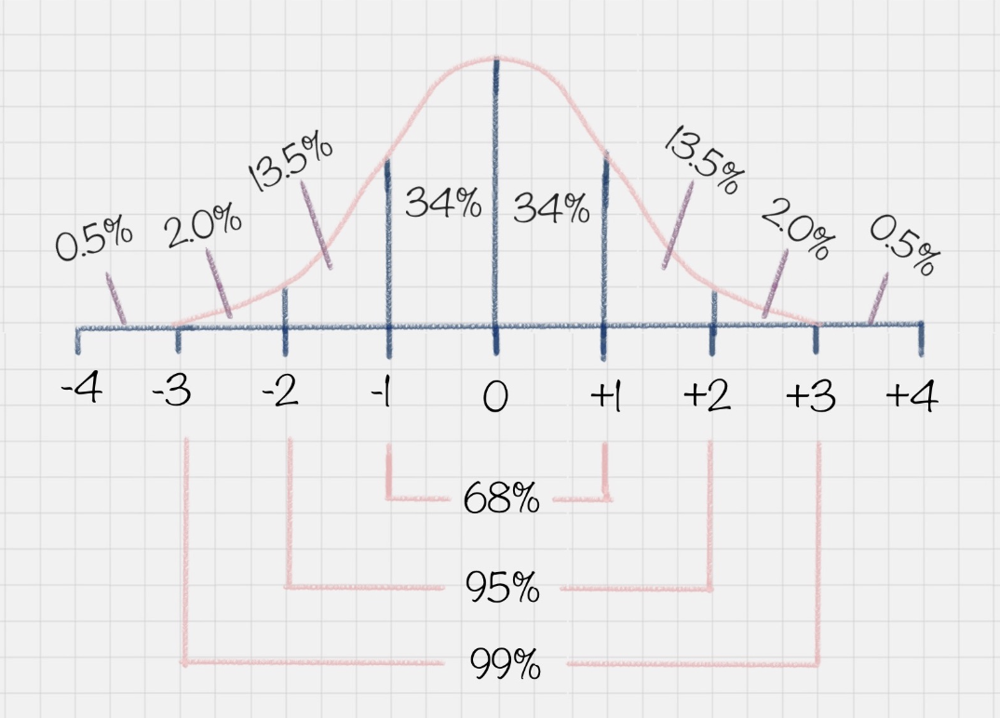
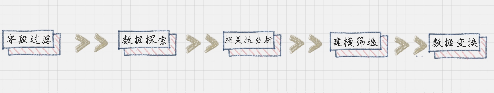
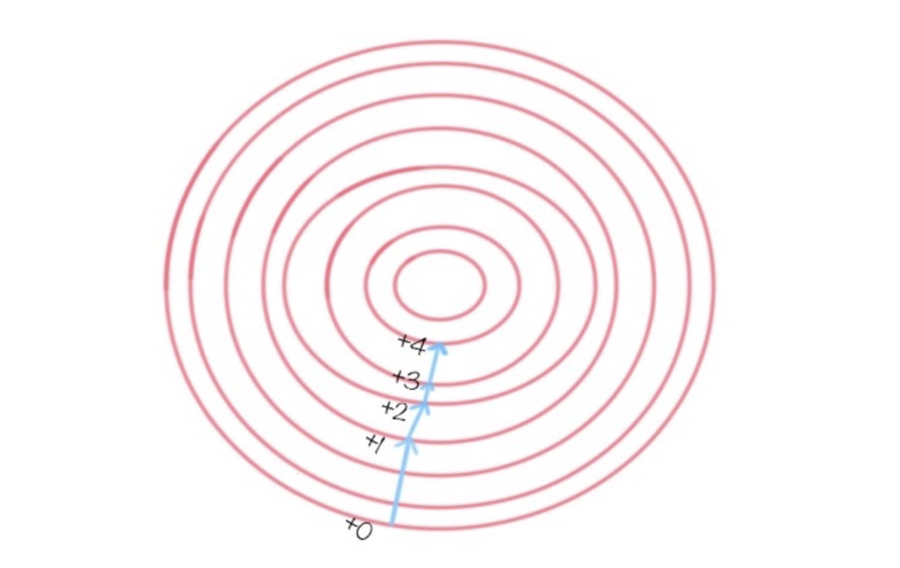

数据变换。如果一个人在百分制的考试中得了 95 分，你肯定会认为他学习成绩很好，如果得了 65 分，就会觉得他成绩不好。如果得了 80 分呢？你会觉得他成绩中等，因为在班级里这属于大部分人的情况。
为什么会有这样的认知呢？这是因为我们从小到大的考试成绩基本上都会满足正态分布的情况。什么是正态分布呢？正态分布也叫作常态分布，就是正常的状态下，呈现的分布情况。比如你可能会问班里的考试成绩是怎样的？这里其实指的是大部分同学的成绩如何。
以下图为例，在正态分布中，大部分人的成绩会集中在中间的区域，少部分人处于两头的位置。正态分布的另一个好处就是，如果你知道了自己的成绩，和整体的正态分布情况，就可以知道自己的成绩在全班中的位置。

另一个典型的例子就是，美国 SAT 考试成绩也符合正态分布。而且美国本科的申请，需要中国高中生的 GPA 在 80 分以上（百分制的成绩），背后的理由也是默认考试成绩属于正态分布的情况。
为了让成绩符合正态分布，出题老师是怎么做的呢？他们通常可以把考题分成三类：第一类：基础题，占总分 70%，基本上属于送分题；第二类：灵活题，基础范围内 + 一定的灵活性，占 20%；第三类：难题，涉及知识面较广的难题，占 10%；那么，你想下，如果一个出题老师没有按照上面的标准来出题，而是将第三类难题比重占到了 70%，也就是我们说的“超纲”，结果会是怎样呢？
你会发现，大部分人成绩都“不及格”，最后在大家激烈的讨论声中，老师会将考试成绩做规范化处理，从而让成绩满足正态分布的情况。因为只有这样，成绩才更具有比较性。所以正态分布的成绩，不仅可以让你了解全班整体的情况，还能了解每个人的成绩在全班中的位置。
数据变换
在数据分析中的角色我们再来举个例子，假设 A 考了 80 分，B 也考了 80 分，但前者是百分制，后者 500 分是满分，如果我们把从这两个渠道收集上来的数据进行集成、挖掘，就算使用效率再高的算法，结果也不是正确的。因为这两个渠道的分数代表的含义完全不同。
所以说，有时候数据变换比算法选择更重要，数据错了，算法再正确也是错的。你现在可以理解为什么 80% 的工作时间会花在前期的数据准备上了吧。那么如何让不同渠道的数据统一到一个目标数据库里呢？这样就用到了数据变换。
在数据变换前，我们需要先对字段进行筛选，然后对数据进行探索和相关性分析，接着是选择算法模型（这里暂时不需要进行模型计算），然后针对算法模型对数据的需求进行数据变换，从而完成数据挖掘前的准备工作。

所以你从整个流程中可以看出，数据变换是数据准备的重要环节，它通过数据平滑、数据聚集、数据概化和规范化等方式将数据转换成适用于数据挖掘的形式。我来介绍下这些常见的变换方法：
数据平滑：去除数据中的噪声，将连续数据离散化。这里可以采用分箱、聚类和回归的方式进行数据平滑，我会在后面给你讲解聚类和回归这两个算法；
数据聚集：对数据进行汇总，在 SQL 中有一些聚集函数可以供我们操作，比如 Max() 反馈某个字段的数值最大值，Sum() 返回某个字段的数值总和；
数据概化：将数据由较低的概念抽象成为较高的概念，减少数据复杂度，即用更高的概念替代更低的概念。比如说上海、杭州、深圳、北京可以概化为中国。
数据规范化：使属性数据按比例缩放，这样就将原来的数值映射到一个新的特定区域中。常用的方法有最小—最大规范化、Z—score 规范化、按小数定标规范化等，我会在后面给你讲到这些方法的使用；
属性构造：构造出新的属性并添加到属性集中。这里会用到特征工程的知识，因为通过属性与属性的连接构造新的属性，其实就是特征工程。比如说，数据表中统计每个人的英语、语文和数学成绩，你可以构造一个“总和”这个属性，来作为新属性。这样“总和”这个属性就可以用到后续的数据挖掘计算中。
在这些变换方法中，最简单易用的就是对数据进行规范化处理。下面我来给你讲下如何对数据进行规范化处理。
数据规范化的几种方法
Min-max 规范化Min-max 规范化方法是将原始数据变换到[0,1]的空间中。用公式表示就是：新数值 =（原数值 - 极小值）/（极大值 - 极小值）。
Z-Score 规范化假设 A 与 B 的考试成绩都为 80 分，A 的考卷满分是 100 分（及格 60 分），B 的考卷满分是 500 分（及格 300 分）。虽然两个人都考了 80 分，但是 A 的 80 分与 B 的 80 分代表完全不同的含义。那么如何用相同的标准来比较 A 与 B 的成绩呢？Z-Score 就是用来可以解决这一问题的。我们定义：新数值 =（原数值 - 均值）/ 标准差。假设 A 所在的班级平均分为 80，标准差为 10。B 所在的班级平均分为 400，标准差为 100。那么 A 的新数值 =(80-80)/10=0，B 的新数值 =(80-400)/100=-3.2。那么在 Z-Score 标准下，A 的成绩会比 B 的成绩好。
我们能看到 Z-Score 的优点是算法简单，不受数据量级影响，结果易于比较。不足在于，它需要数据整体的平均值和方差，而且结果没有实际意义，只是用于比较。
小数定标规范化小数定标规范化就是通过移动小数点的位置来进行规范化。小数点移动多少位取决于属性 A 的取值中的最大绝对值。举个例子，比如属性 A 的取值范围是 -999 到 88，那么最大绝对值为 999，小数点就会移动 3 位，即新数值 = 原数值 /1000。那么 A 的取值范围就被规范化为 -0.999 到 0.088。上面这三种是数值规范化中常用的几种方式。
Python的SciKit-Learn库
使用SciKit-Learn 是 Python 的重要机器学习库，它帮我们封装了大量的机器学习算法，比如分类、聚类、回归、降维等。此外，它还包括了数据变换模块。我现在来讲下如何使用 SciKit-Learn 进行数据规范化。
- Min-max 规范化我们可以让原始数据投射到指定的空间[min, max]，在 SciKit-Learn 里有个函数 MinMaxScaler 是专门做这个的，它允许我们给定一个最大值与最小值，然后将原数据投射到[min, max]中。默认情况下[min,max]是[0,1]，也就是把原始数据投放到[0,1]范围内。我们来看下下面这个例子：
1 |
|
结果：
1 |
|
- Z-Score 规范化在 SciKit-Learn 库中使用 preprocessing.scale() 函数，可以直接将给定数据进行 Z-Score 规范化。
1 |
|
结果：
1 |
|
这个结果实际上就是将每行每列的值减去了平均值，再除以方差的结果。我们看到 Z-Score 规范化将数据集进行了规范化，数值都符合均值为 0，方差为 1 的正态分布。- 小数定标规范化我们需要用 NumPy 库来计算小数点的位数。NumPy 库我们之前提到过。这里我们看下运行代码：
1 |
|
结果：
1 |
|
数据挖掘中数据变换比算法选择更重要
在考试成绩中，我们都需要让数据满足一定的规律，达到规范性的要求，便于进行挖掘。这就是数据变换的作用。如果不进行变换的话，要不就是维数过多，增加了计算的成本，要不就是数据过于集中，很难找到数据之间的特征。在数据变换中，重点是如何将数值进行规范化，有三种常用的规范方法，分别是 Min-Max 规范化、Z-Score 规范化、小数定标规范化。其中 Z-Score 规范化可以直接将数据转化为正态分布的情况，当然不是所有自然界的数据都需要正态分布，我们也可以根据实际的情况进行设计，比如取对数 log，或者神经网络里采用的激励函数等。

在最后我给大家推荐了 Python 的 sklearn 库，它和 NumPy, Pandas 都是非常有名的 Python 库，在数据统计工作中起了很大的作用。SciKit-Learn 不仅可以用于数据变换，它还提供了分类、聚类、预测等数据挖掘算法的 API 封装。后面我会详细给你讲解这些算法，也会教你如何使用 SciKit-Learn 工具来完成数据挖掘算法的工作。
Q&A
数据规范化、归一化、标准化是同一个概念么？
数据规范化是更大的概念，它指的是将不同渠道的数据，都按照同一种尺度来进行度量，这样做有两个好处，一是让数据之间具有可比较性；另一个好处就是方便后续运算，因为数据在同一个数量级上规整了，在机器学习迭代的时候，也会加快收敛效率。
数据归一化和数据标准化都是数据规范化的方式。不同点在于数据归一化会让数据在一个[0,1]或者[-1,1]的区间范围内。而数据标准化会让规范化的数据呈现正态分布的情况，所以你可以这么记：归一化的“一”，是让数据在[0,1]的范围内。
而标准化，目标是让数据呈现标准的正态分布。
什么时候会用到数据规范化（Min-max、Z-Score 和小数定标）？刚才提到了，进行数据规范化有两个作用：一是让数据之间具有可比较性，二是加快后续算法的迭代收敛速度。
实际上你能看到 Min-max、Z-Score 和小数定标规范化都是一种线性映射的关系，将原来的数值投射到新的空间中。这样变换的好处就是可以看到在特定空间内的数值分布情况，比如通过 Min-max 可以看到数据在[0,1]之间的分布情况，Z-Score 可以看到数值的正态分布情况等。不论是采用哪种数据规范化方法，规范化后的数值都会在同一个数量的级别上，这样方便后续进行运算。那么回过头来看，在数据挖掘算法中，是否都需要进行数据规范化呢？一般情况下是需要的，尤其是针对距离相关的运算，比如在 K-Means、KNN 以及聚类算法中，我们需要有对距离的定义，所以在做这些算法前，需要对数据进行规范化。另外还有一些算法用到了梯度下降作为优化器，这是为了提高迭代收敛的效率，也就是提升找到目标函数最优解的效率。
我们也需要进行数据规范化，比如逻辑回归、SVM 和神经网络算法。在这些算法中都有目标函数，需要对目标函数进行求解。梯度下降的目标是寻找到目标函数的最优解，而梯度的方法则指明了最优解的方向，如下图所示。

当然不是所有的算法都需要进行数据规范化。在构造决策树的时候，可以不用提前做数据规范化，因为我们不需要关心特征值的大小维度，也没有使用到梯度下降来做优化，所以数据规范化对决策树的构造结果和构造效率影响不大。除此之外，还是建议你在做数据挖掘算法前进行数据规范化。
如何使用 Z-Score 规范化，将分数变成正态分布？
我在专栏文稿中举了一个 Z-Score 分数规范化的例子，假设 A 与 B 的考试成绩都为 80 分，A 的考卷满分是 100 分（及格 60 分），B 的考卷满分是 500 分（及格 300 分）。这里假设 A 和 B 的考试成绩都是成正态分布，可以直接采用 Z-Score 的线性化规范化方法。在专栏的讨论区中，有个同学提出了“Z-Score”的非线性计算方式，大家可以一起了解下：先按公式计算出百分等级。百分等级（年级）=100-(100x 年级名次 -50)/ 有效参加考试人数。这里百分等级是每个学生在该批学生中的相对位置，其中百分等级是按照正态分布图的所占面积比例求得的；按照百分等级数去标准正态分布表中查询得出 Z-Score 值，这样最终得出的 Z 分便是标准的正态分布，能够将偏态转化成标准正态。
因为在很多情况下，数值如果不是正态分布，而是偏态分布，直接使用 Z-Score 的线性计算方式无法将分数转化成正态分布。采用以上的方法可以解决这一个问题，大家可以了解下。这里偏态分布指的是非对称分布的偏斜状态，包括了负偏态，也就是左偏态分布，以及正偏态，也就是右偏态分布。